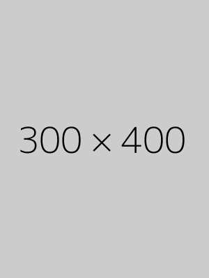

Outfitter for All Seasons!
At Eddie Browser, we craft versatile pieces designed for all seasons. Our signature 4-season trench coat adapts to any weather with zip-out liners and adjustable ventilation. The all-climate chino transitions effortlessly from summer evenings to winter offices with simple accessory changes. Discover how our modular clothing system lets you build a complete wardrobe with just 12 interchangeable core pieces. 
At Eddie Browser, we believe in outfitting both people and planet for the future. Our Eco-Adapt collection features recycled performance fibers that wick moisture in summer while retaining warmth in winter - all from 100% post-consumer materials. The patented modular design means you can replace individual components instead of entire garments, with lifetime repairs included. Even our packaging transforms into garment bags and storage solutions, because true style shouldn't come at the Earth's expense. Dress sharp, travel light, and tread lightly with pieces designed to outlast seasons and trends alike.
Master seasonal transitions with our patented layering system. The 3-in-1 convertible suit pairs a breathable tropical wool blazer with removable thermal lining and moisture-wicking dress shirt for boardroom-to-bar versatility. Our climate-responsive fabrics automatically adjust their weave density as temperatures fluctuate, while the neutral capsule color palette ensures every combination works effortlessly. Whether you're facing unexpected cold snaps or unseasonable warmth, Eddie Browser's adaptive designs keep you perfectly dressed for whatever the forecast brings.
Eddie Browser's foundation lies in our seasonless staples - pieces designed to transcend trends and weather alike. Our performance-blend Oxford shirt features hidden ventilation panels for summer and a brushed cotton version for winter, maintaining the same crisp silhouette year-round. The magic is in the details: magnetic cuff closures that work with gloves, colorfast dyes that resist sun bleaching, and reinforced stress points that outlast ordinary garments. These aren't just clothes - they're solutions dressed in classic tailoring.